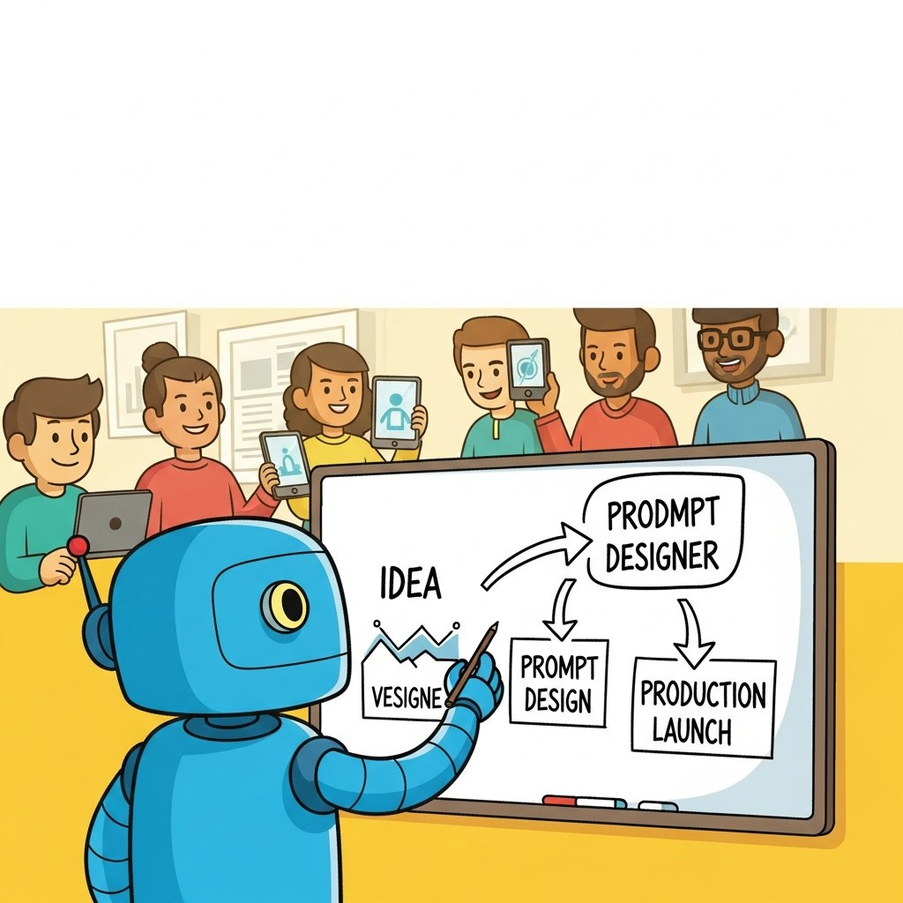

Part Overview
From idea to MVP: the product owner's operating model for shipping AI-centered products.
Big Picture
From idea to MVP: the product owner's operating model for shipping AI-centered products.
Chapters
Chapter 67 From Idea to MVP
- 67.1 Ideation: Finding LLM-Worthy Problems
- 67.2 Problem-Discovery Heuristics
- 67.3 The Bet-My-Money Test and Capability Mapping
- 67.4 From Hypothesis to Product Spec
- 67.5 LLM Product Management
- 67.6 UX and Iteration for LLM Products
- 67.7 LLM Strategy & Use Case Prioritization
- 67.8 LLM Vendor Evaluation & Build vs. Buy
- 67.9 What Makes AI Products Different
- 67.10 Choosing the Model's Role
- 67.11 Risk and Feasibility Assessment
- 67.12 The Observe-Steer Development Loop
- 67.13 The Founder's Prototype Loop
- 67.14 Documentation as Control Surface
- 67.15 From Prototype to MVP
What's Next?
This part begins with Chapter 67: From Idea to MVP. Each chapter builds on the previous one, so we recommend reading Part XIV in order.